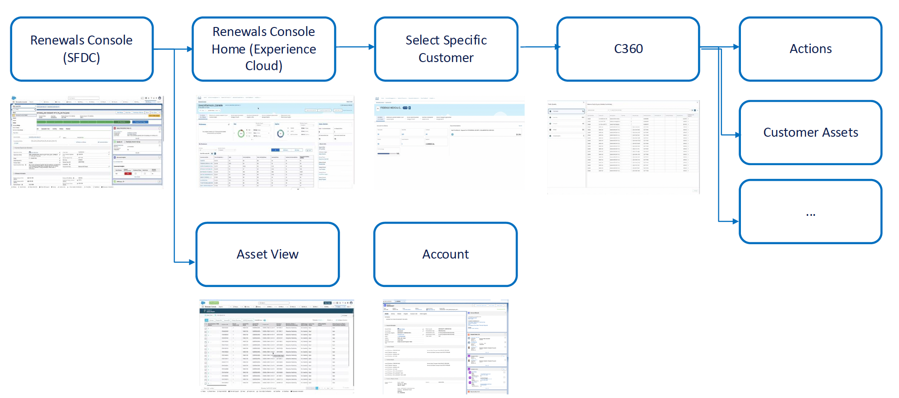
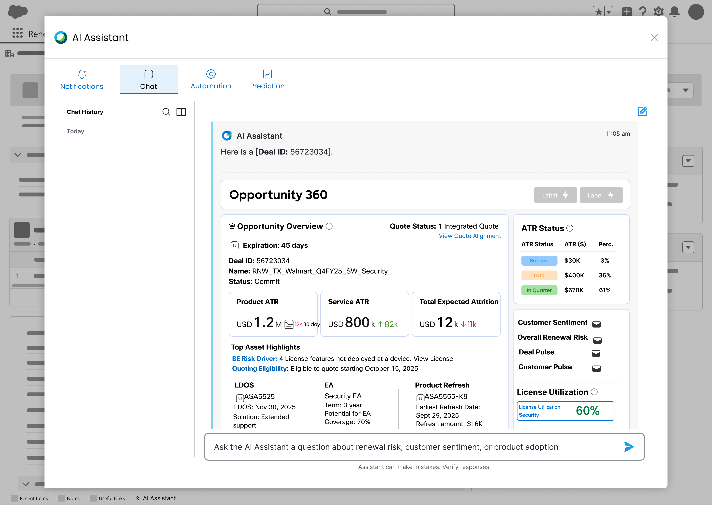
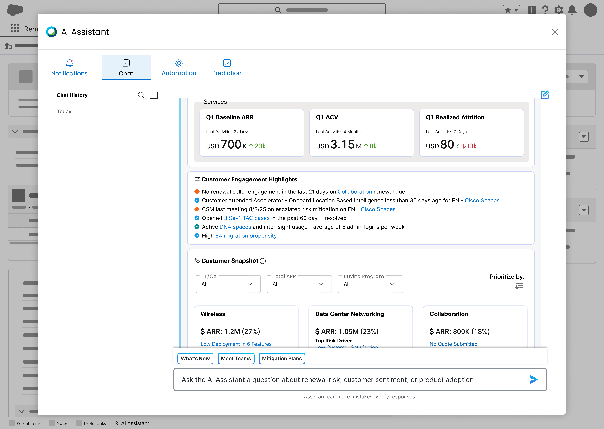
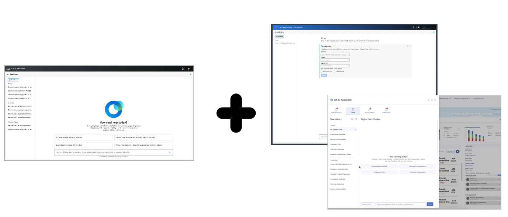
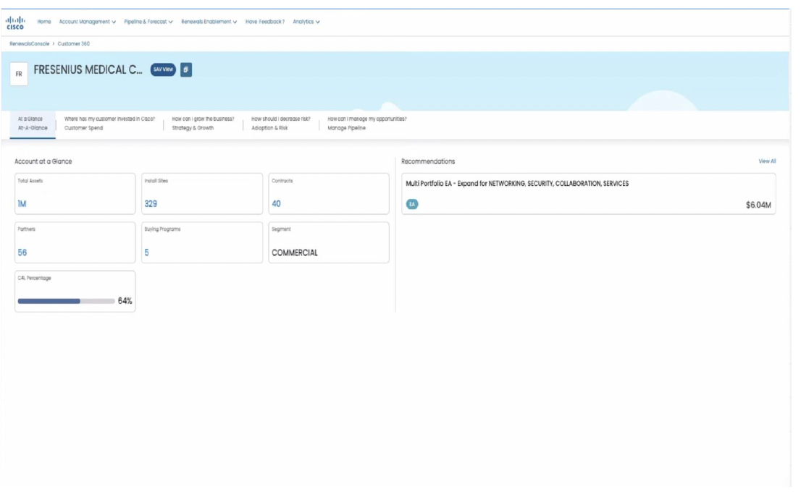
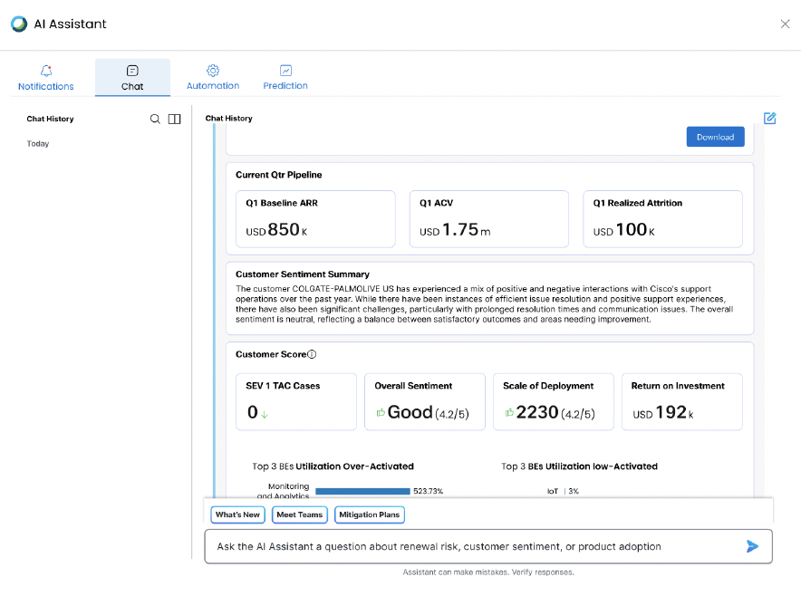

Renewal Managers and Customer Success teams were hunting for a single customer's information across four separate screens before every conversation. I proposed an AI Assistant that surfaces that context in place — inside the workflow they already use, instead of asking them to learn a new one.
Research & User Feedback
Before proposing a solution, I gathered feedback directly from Renewal Managers, Account Managers, and Customer Success teams on how they actually worked with customer data day to day. A consistent pattern emerged: information sat in the right place technically, but not in a place anyone could reach quickly.
I must do a lot of research on my customer, so I engage informed and with confidence.
I do not have access to all the data and/or must tap multiple sources.
I have to be well-coordinated with the account team, including knowing what opportunity they are pursuing and how we best complement our selling efforts.
Problem Statement
Users needed timely, accurate access to a customer's information to do their jobs effectively, but the existing system didn't provide that data or functionality in one place. The result was frustration, inefficiency, and knock-on effects on customer service and business outcomes — a gap between user needs and system capability that needed to be closed to improve information accessibility and overall satisfaction.
Current Workflow
Reaching a single customer's C360 record meant moving through the Renewals Console (SFDC), into the Renewals Console Home on Experience Cloud, selecting the specific customer, and only then arriving at C360 — where users could branch into Actions, Customer Assets, and other sub-views. Two more paths, Asset View and Account, ran in parallel, each requiring its own navigation. None of this was technically broken; it simply asked users to hold the map in their heads every time.

Current-state workflow diagram — Consolidating 4 distinct screens into a single view
Benefits of Consolidation
The core idea was simple: if a customer's information lived in one place, users would stop hunting for it and start being handed it.
Proposed Solution
Instead of routing users through the Renewals Console and Renewals Console Home before they could even select a customer, I proposed an AI Assistant as the new entry point — surfacing C360 information conversationally, in place, without eliminating the existing consoles users already relied on.

Proposed Part A...

Proposed Part B...
Design Language
Rather than designing a new AI interface in isolation, I combined Cisco's existing CX AI Assistant chat pattern with the data-dense panels already used elsewhere in the Renewals ecosystem — giving the proposal an interaction model users would recognize on day one.

Design Consistency
Current C360 vs. Suggestion
The current C360 view gives users a static account snapshot — totals, buying programs, contacts — that still requires manual interpretation. The proposed AI Assistant panel surfaces the same underlying data as a scored, conversational view: current-quarter pipeline, customer sentiment summary, a customer score across support cases and deployment scale, and quick actions like "What's New," "Meet the Team," and "Mitigation Plans" — all answerable directly through the assistant.

Current C360 — static account snapshot

Suggested AI Assistant panel — scored, conversational view
Final Thoughts
Because the starting point was direct user feedback rather than an assumed solution, the proposal had a natural argument built in: every design decision traced back to a specific quote, workflow step, or pain point a Renewal Manager or Customer Success team member had already named. Presenting the current-state workflow alongside the proposed AI Assistant flow made the case concrete for stakeholders — not "trust the AI," but "here's the exact detour we're removing."
This case study reflects the discovery-to-proposal phase of the project; validation and rollout continued beyond what's captured here.